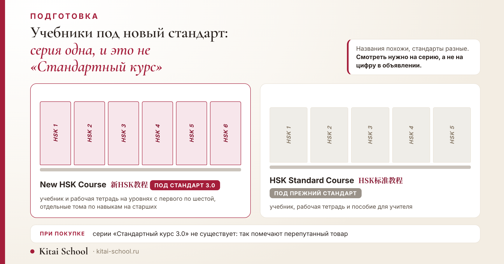
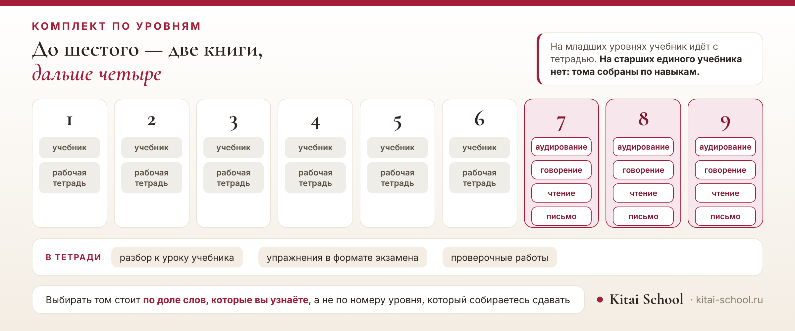

Подготовка
Учебники HSK 3.0: какая серия официальная, чем она отличается от старого курса и как по ней заниматься


Самая частая ошибка при покупке выглядит безобидно: человек ищет «стандартный курс 3.0», находит товар с похожим названием и покупает учебник под прежний стандарт. Серии с таким названием не существует — и это стоит знать до оплаты, а не после.
Разберём, какая серия выпущена под новый стандарт, как устроен комплект на каждом уровне, что лежит внутри тетради и что делать тем, у кого уже есть старые учебники.
Короткий ответ: официальная серия одна
Под новый стандарт выпущена отдельная серия — New HSK Course, по-китайски 新HSK教程. Издало её издательство иностранных языков и научных исследований совместно с центром языкового образования.
Это новая серия, а не обновлённое издание прежней. Прежняя — HSK Standard Course, HSK标准教程 — сделана под старый стандарт и под него же и остаётся.
Сразу оговорюсь об источниках. Всё, что я здесь привожу, собрано по описаниям магазинов и справочных материалов. Страницу самого издательства я не открывала, поэтому издания, тиражи и даты выхода отдельных томов не называю — только то, что совпало в нескольких независимых описаниях.
«Стандартный курс 3.0»: серия, которой нет
«Стандартный курс 3.0» — серии с таким названием не существует: «Стандартный курс» сделан под прежний стандарт, а под 3.0 выпущена другая серия.
Путаница возникает естественно. Прежняя серия много лет была основной, её название знают все, и когда появился новый стандарт, продавцы стали приписывать «3.0» к привычному имени — иногда по невнимательности, иногда чтобы товар находился по новому запросу.
Как проверить перед покупкой. Смотрите не на цифру в описании, а на само название серии и на то, что написано на обложке. Если это «Стандартный курс», вы держите в руках пособие под прежний стандарт, каким бы ни был заголовок объявления.
Это не значит, что покупка бесполезна — к старой серии мы ещё вернёмся. Это значит, что вы покупаете не то, что искали.
Второй источник путаницы — переводные названия. Обе серии продаются под английскими именами, и в русских описаниях их переводят кто во что горазд: «новый курс», «стандартный курс», «официальный учебник». По переводу различить серии нельзя вовсе, поэтому смотреть нужно на оригинальное название.
Проще всего ориентироваться по китайскому написанию на обложке: у новой серии и у прежней они разные, и перепутать их, держа книгу в руках, невозможно. В объявлении без фотографии обложки такой проверки нет — это повод попросить снимок.
Что входит в комплект на каждом уровне
Устройство серии меняется на середине, и это важно понимать заранее.
Уровни с первого по шестой собраны привычно: учебник и рабочая тетрадь к нему. Уровни с седьмого по девятый устроены иначе — там отдельные тома по четырём навыкам: аудирование, говорение, чтение и письмо.
Логика понятная. На старших уровнях нет смысла в едином учебнике «на всё»: задачи по навыкам расходятся слишком далеко, и человеку, которому нужно письмо, незачем покупать том по говорению.
Что это меняет на практике. До шестого уровня вы покупаете две книги и работаете по ним подряд: учебник задаёт порядок, тетрадь закрепляет. С седьмого набор собирается под задачу — и это первый момент, когда придётся решать, что именно вам нужно.
Решение зависит от цели. Если готовитесь к экзамену целиком, нужны все четыре тома, и это заметная покупка. Если язык нужен для работы с документами, можно начать с чтения и письма, отложив говорение. На младших уровнях такого выбора нет и быть не может: там ещё нечего разделять.
Две серии рядом
Соберу различия в одном месте.

| Серия | Под какой стандарт | Статус | Что в комплекте |
|---|---|---|---|
| New HSK Course 新HSK教程 | под стандарт 3.0 | официальная серия нового образца | учебник и рабочая тетрадь на уровнях с первого по шестой, отдельные тома по навыкам на старших |
| HSK Standard Course HSK标准教程 | под прежний стандарт | серия предыдущего поколения | учебник, рабочая тетрадь и пособие для учителя |
Сравнивать серии по методике я не берусь: прямого сопоставления в источниках нет, а выдавать свои впечатления за установленный факт неправильно. Что различается достоверно — это стандарт, под который сделан каждый курс, и устройство комплекта на старших уровнях.
Что внутри рабочей тетради
Тетрадь в новой серии состоит из трёх частей, и это устройство стоит знать, чтобы не использовать её как простой задачник.
- Разбор к уроку учебника.
- Упражнения в формате экзамена.
- Проверочные работы.
Первая часть возвращает к уроку учебника, вторая тренирует формат экзамена, третья проверяет результат. Это описание тетради первого уровня — другие тома я не смотрела и обобщать на всю серию не стану.
Практический вывод из такого устройства один: тетрадь не заменяет учебник и не идёт параллельно ему. Она идёт следом, и браться за её вторую часть имеет смысл, когда урок уже разобран.
Если вы уже занимаетесь по старой серии
Ученик пришёл с полным комплектом старой серии, купленным за полгода до того, и единственным вопросом: выбрасывать ли. Он прочитал где-то, что учебники устарели, и расстроился — комплект обошёлся недёшево.
Я предложила не выбрасывать, а открыть и посмотреть, что внутри. Лексика младших уровней почти не изменилась: слова, которыми описывают семью, день и дорогу, те же самые, какой бы стандарт ни был на обложке. Тексты и упражнения работали ровно так же, как работали месяц назад.
Разошлось другое — формат части заданий в тетради. Но это касалось подготовки к экзамену, а не изучения языка, и решалось отдельными прогонами по новым образцам.
Он доучился по старому комплекту до конца своего уровня и купил том новой серии только на следующий. Так вышло и дешевле, и спокойнее: менять учебник посреди уровня — значит заново привыкать к подаче, к порядку тем и к тому, как устроены упражнения.
Отдельно скажу, почему я вообще об этом говорю. Смена стандарта всегда поднимает волну советов «срочно обновить всё», и на этой волне люди выбрасывают рабочие вещи. Учебник младшего уровня устаревает медленнее, чем кажется: язык в нём не меняется.
Вывод, который я делаю: учебник учит языку, а экзаменационный формат добирается отдельно. Менять серию посреди уровня — потерять больше, чем выиграть.
Сколько уроков и слов в томе
Точные цифры я нашла по двум томам, и привожу только их.
| Том | Уроков | Словарь |
|---|---|---|
| Уровень 1 | 15 | около 300 слов |
| Уровень 3 | 18 | около 500 слов |
Цифры совпадают с объёмом словаря на этих уровнях по стандарту — то есть учебник не добавляет лексику сверх требований и не урезает её. Для планирования это удобно: один том закрывает один уровень целиком.
По остальным томам точных данных я не привожу. Серия выходит постепенно, описания расходятся, и называть числа, которых не проверила, не стану.
Как выбрать том под свой уровень
Самый частый способ выбора — по номеру уровня, который собираетесь сдавать, — работает плохо. Номер говорит о цели, а учебник нужен под текущее состояние.
Выбирайте по словарю. Откройте список слов тома и посмотрите, какую долю вы узнаёте мгновенно. Если почти все — том пройден, берите следующий. Если меньше половины — рано, вернитесь на уровень назад.
Нормальное состояние для начала тома: вы узнаёте примерно половину слов, остальное предстоит набрать. Тогда книга работает как учебник, а не как словарь, по которому вы продираетесь с переводчиком.
Отдельно про старшие уровни: там, где тома идут по навыкам, выбирать нужно не только уровень, но и навык. Начинать стоит с того, который слабее, а не с того, который приятнее.
Как понять, какой навык слабее. Самый простой способ — посмотреть, чем вы занимаетесь добровольно. Почти все изучающие читают охотнее, чем пишут, и слушают охотнее, чем говорят, — именно потому, что чтение и слушание не требуют производить язык, а только узнавать его. Слабым обычно оказывается то, что откладывается.
Второй способ надёжнее, но требует честности: пройдите по одному заданию каждого типа и засеките, где вы остановились дольше всего. Это и будет ваш том.
Чего я не берусь утверждать
Честный список того, что осталось за пределами проверки.
| Что | Почему |
|---|---|
| точное число томов во всей серии | в описаниях называют около двух десятков |
| даты выхода отдельных томов | выходят постепенно, и описания расходятся |
| наличие тетрадей к старшим уровням | часть пособий выходит позже учебников |
Всё это выясняется в одном месте — у продавца перед покупкой. Спрашивать стоит не «есть ли новый учебник», а конкретно: какая серия, какой уровень, есть ли к нему тетрадь.
Как заниматься по учебнику, чтобы он работал
Учебник сам по себе не учит: он задаёт порядок. Как устроено одно занятие и как собрать из него неделю, у нас разобрано отдельно: как изучить китайский самостоятельно.
Здесь скажу только то, что относится к этой серии. Не пропускайте тетрадь. Её вторая часть — почти единственное место, где формат заданий встречается в учебном виде, а не на экзамене, и пропустив её, вы придёте на экзамен с незнакомым форматом.
И не берите два тома сразу «для темпа». Том рассчитан на уровень целиком, и пройти его наполовину, перескочив на следующий, — верный способ получить дыры, которые всплывут на экзамене.
Последнее, о чём стоит сказать. Учебник задаёт порядок тем, но не заставляет говорить. Всё, что в нём есть, можно пройти молча — прочитать тексты, сделать упражнения, закрыть книгу. Такое прохождение выглядит как работа и даёт очень мало: язык, который ни разу не был произнесён вслух, на экзамене не появится.
Поэтому к каждому уроку я добавляю одно действие, которого в книге нет: прочитать текст вслух целиком и пересказать его двумя-тремя фразами, не подглядывая. Это занимает несколько минут и отличает пройденный урок от просмотренного.
Частые ошибки при покупке
- Искать «Стандартный курс 3.0». Такой серии нет; по этому запросу вам продадут пособие под прежний стандарт.
- Брать том по номеру цели, а не по своему словарю. Книга окажется либо пройденной, либо непосильной.
- Покупать учебник без тетради. Формат заданий остаётся неотработанным.
- Выбрасывать старые учебники. Лексика младших уровней почти та же; выбрасывать рано.
- Покупать сразу всю линейку. Серия выходит постепенно, и часть томов может ещё не быть доступна.
Чего в статье нет намеренно
- Разбора девяти уровней и сроков перехода. Это тема статьи про сертификат HSK и девять уровней.
- Цен и магазинов. Устаревает быстрее, чем выходит статья.
- Точного числа томов в серии. Называют около двух десятков, но подтвердить цифру я не смогла.
- Сравнения методик двух серий. Прямых источников нет, а своё впечатление я фактом не назову.
- Разбора заданий HSK 4. Форматы и ловушки — здесь: HSK 4 в 2026.
- Бесплатных материалов и списков лексики из сети. Им посвящена отдельная статья.
Не уверены, какой том ваш? На пробном занятии мы смотрим не на номер уровня, а на то, какую долю словаря вы узнаёте, — и подбираем том по текущему состоянию.
Приходите на пробное занятие, форматы и программа — здесь: онлайн-курсы китайского.
Частые вопросы (FAQ)
По какому учебнику готовиться к HSK 3.0?
Под новый стандарт выпущена отдельная серия — New HSK Course, по-китайски 新HSK教程. Её выпустило издательство иностранных языков и научных исследований совместно с центром языкового образования. Это и есть официальный курс нового образца.
Существует ли «Стандартный курс 3.0»?
Нет. HSK Standard Course — серия предыдущего поколения, сделанная под прежний стандарт, и версии «3.0» у неё не выходило. Если в описании товара стоит такое название, скорее всего продавец перепутал серии: проверьте, что именно вам предлагают.
Что входит в комплект на каждом уровне?
На уровнях с первого по шестой — учебник и рабочая тетрадь к нему. На седьмом, восьмом и девятом устройство другое: там отдельные тома по четырём навыкам — аудирование, говорение, чтение и письмо.
Что внутри рабочей тетради?
Три части: разбор к уроку учебника, упражнения в формате экзамена и проверочные работы. Это по описанию тетради первого уровня — других томов я не смотрела и обобщать не буду.
Выбрасывать ли старые учебники?
Не стоит. Лексика младших уровней почти не изменилась, и тексты с упражнениями работают как работали. Разойтись может формат заданий в тетради, но это добирается отдельными прогонами по новым образцам. Менять серию посреди уровня я не советую.
Сколько слов в учебнике первого уровня?
Около трёхсот, и в нём пятнадцать уроков. В томе третьего уровня — восемнадцать уроков и около пятисот слов. По остальным томам точных цифр я не приводила: они выходят постепенно, и описания расходятся.
Источники
- Название официальной серии, издатель, устройство комплекта по уровням и состав рабочей тетради приведены по описаниям магазинов и справочных материалов, совпавшим между собой.
- Число уроков и объём словаря названы по двум томам — первого и третьего уровней.
- Страницу издательства я не открывала: издания, тиражи и даты выхода отдельных томов не называю.
- Точное число томов в серии не привожу — встречается цифра около двух десятков, подтвердить её не удалось.
- Наличие тетрадей к старшим уровням не утверждаю: часть пособий выходит позже учебников.
- Методики двух серий не сравниваю: прямого сопоставления в источниках нет.
- Цен и магазинов не называю — это устаревает быстрее, чем статья выходит.
- Разбор уровней, сроки перехода и пороги баллов вынесены в другие материалы блога; ссылки стоят по тексту.
- Случай с комплектом старой серии взят из занятий Kitai School; имя ученика не привожу.